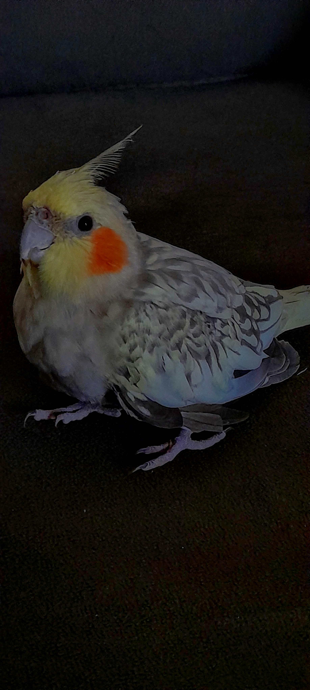
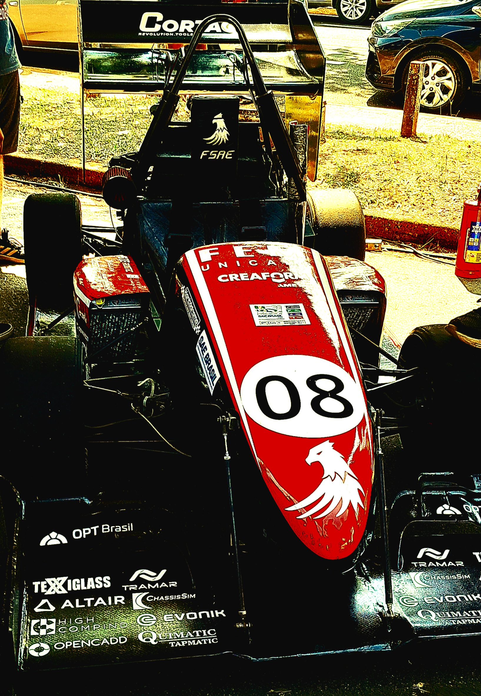
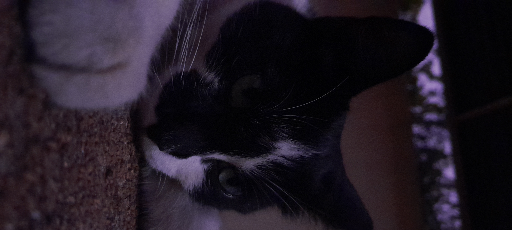
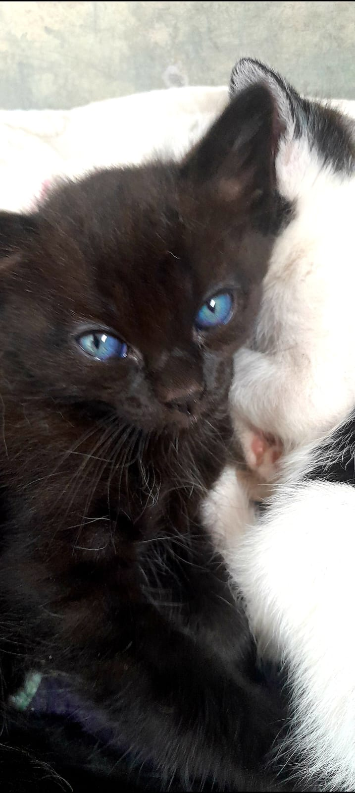
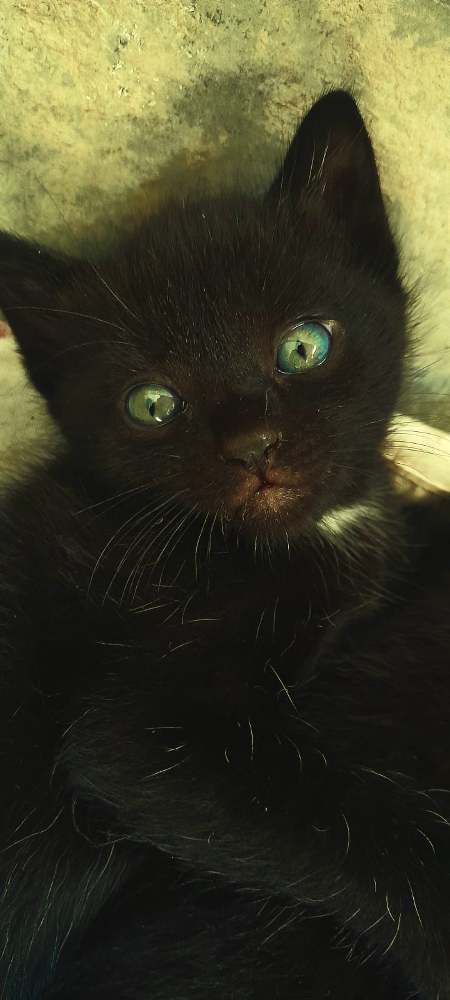
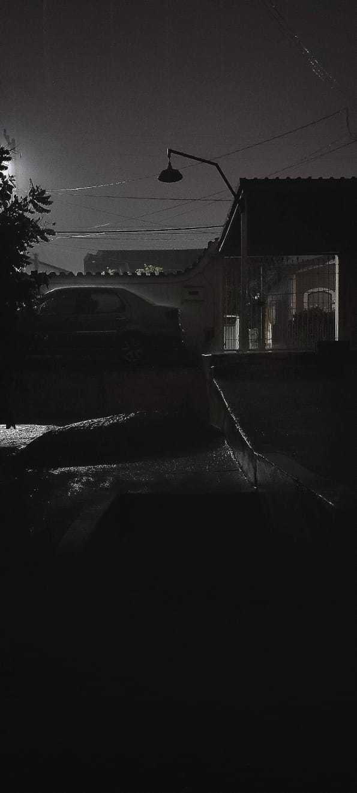

Sobre
Nicholas Enzo Beghini Batistel nasceu no dia 3 de março de 2008, em um momento que, embora aparentemente
comum, foi o início de uma jornada que se revela promissora e cheia de entusiasmo. Com apenas 16 anos
e é um jovem multifacetado, com interesses e paixões que definem sua trajetória e o perfil de sua
vida.
Atualmente, está no segundo ano do ensino médio, uma fase crucial em que explora suas aptidões
e se prepara para o futuro. Sua decisão de cursar Desenvolvimento de Sistemas (DS) demonstra sua
inclinação para a tecnologia e a inovação, áreas que considera fascinantes e desafiadoras.
Este
curso
não só alimenta sua curiosidade em relação à programação e ao desenvolvimento de softwares, mas também
complementa seu desejo de se destacar no mundo digital.
No entanto, é na fotografia que Nicholas encontra sua verdadeira paixão.
Sonha em se tornar
fotógrafo
profissional, uma meta que reflete seu amor pela arte e pela captura de momentos especiais. Seus olhos
enxergam o mundo de uma maneira única, e ele busca transformar essa visão em imagens que falam e
emocionam. A fotografia não é apenas um hobby, mas uma forma de expressão e um caminho
para explorar sua criatividade.
Além de seus estudos e sonhos profissionais, valoriza profundamente seus relacionamentos
pessoais.
Está em um relacionamento há 1 ano e 8 meses, um vínculo que traz alegria e suporte à sua
vida. Este aspecto de sua vida demonstra sua capacidade de cultivar e manter relações significativas e
duradouras.
Nicholas em sua jornada foca pela determinação e pela busca incessante de seus sonhos. À medida que
avança em sua educação e explora suas paixões, ele continua a construir um futuro promissor,
equilibrando o desenvolvimento de suas habilidades técnicas com sua aspiração artística. Com uma base
sólida e um olhar voltado para o futuro, Nicholas Enzo Beghini Batistel está pronto para enfrentar os
desafios que virão e transformar seus sonhos em realidade.
Trabalhos
Nicholas Enzo Beghini Batistel, com 16 anos, está determinado a dar os primeiros passos em sua jornada
profissional, buscando um emprego inicial que não só ajude a construir uma sólida base para sua
carreira, mas também permita que ele coloque em prática sua verdadeira paixão:
A fotografia.
Atualmente está imerso no estudo da fotografia, um campo que o fascina e inspira. Está
cursando um programa especializado na área e já começou a desenvolver seu portfólio, criando álbuns que
capturam a essência de sua visão artística. Suas fotos têm sido bem recebidas por amigos, familiares e
colegas, refletindo seu talento e dedicação ao ofício.
Neste momento de transição, Nicholas procura um emprego que lhe permita não apenas adquirir experiência
profissional, mas também integrar suas habilidades fotográficas no ambiente de trabalho. Seu objetivo é
encontrar uma posição inicial que possa servir de trampolim para a sua carreira, ao mesmo tempo em que
ele continua a explorar e aprimorar suas técnicas fotográficas.
Aqui estão algumas das melhores fotos tiradas por ele, evidenciando seu potencial e sua habilidade
crescente na arte da fotografia. Cada imagem é um testemunho do seu olhar apurado e da sua capacidade de
transformar momentos cotidianos em obras de arte visuais:
-
- Um retrato que captura a profundidade e a emoção, refletindo a habilidade de Nicholas em destacar a essência dos seus sujeitos.
-
- Uma cena urbana vibrante, mostrando seu talento para encontrar beleza e interesse em ambientes comuns.
-
- Um close-up impressionante, que destaca seu domínio das técnicas de iluminação e composição.
-
- Um close-up impressionante, com o foco imprecionante e composição.
-
- Um close-up impressionante, focado ao maximo no contraste dos olhos de seu pet
-
- Um close-up impressionante,mostrando sua habilidade com iluminação